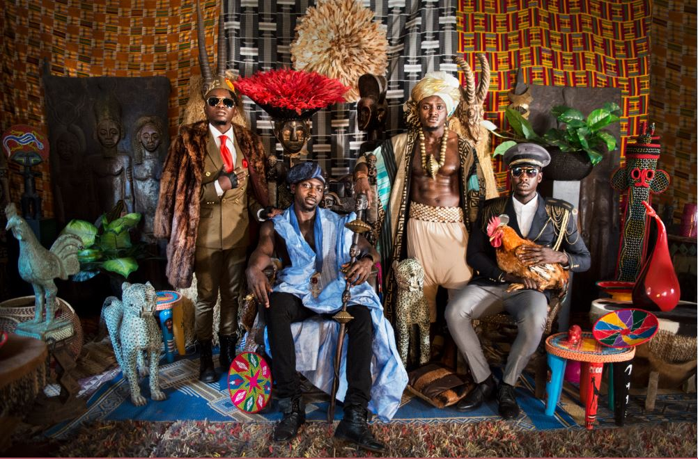

<link rel="stylesheet" href="style.css">

<!-- Introduction to Sauti Sol band -->
<section>
    
    <div class="title">
        <h1 class="band-name">Sauti Sol</h1>
    </div>
    <div >
        
    </div>
</section> 
<!-- End of Introduction -->

<!-- Background story about Sauti Sol   -->
<section> 
   <div>
    <h1>Personal profile</h1>
    <p class="class profile"> 
        Sauti Sol are a Kenyan afro-pop band formed in Nairobi, Kenya by vocalists Bien-Aimé Baraza, Willis Chimano and Savara Mudigi in 2005. Initially an a cappella group, guitarist Polycarp Otieno joined before they named themselves Sauti. <br>
    </p>
    <p>Member: Bien-Aimé Baraza, Delvin Mudigi, Po.. <br>
        Album: Afrikan Sauce, Mwanzo, Sol Filosofia, ... <br>
        Origin: Nairobi, Kenya
    </p>
   </div>
   <div>
       <h2>Some of there album include</h2>
       <ol class="album">
            <li> Live and die in Africa</li>
            <li> Midnight Train</li>
            <li> Sauti Sol-EP</li>
            <li> Saul filosofla</li>
       </ol>
       <a href="https://en.wikipedia.org/wiki/Sauti_Sol" target="_blank"><button>Read more</button></a>
   </div>
   <div>
       <p>The songs i love from my favorite band are as listed below.Not forgetting there best video performance that always make you want to sit down and enjoy Kenyan music</p>
        <ol class="music">
            <li> Susanna</li>
            <li> Short N sweet</li>
            <li> Insecure</li>
            <li> Feel my love</li>
            <li> Extravaganza</li>
            <li> Sober</li>
            <li> Girl next door</li>
             <li> Kuliko jana</li>
        </ol>
   </div>
</section>
<!-- Personal profile of each sauti sol individual -->
<section>
    <h1>Personal profile of each individual of the sauti sol</h1>
       <h3>Bien-Aime Baraza</h3>
       <p>Bien-Aime (which means beloved in French) is the band’s songwriter, vocalist as well as a guitarist. He was born on December 28, 1987, making him 33 years old as of 2020. Bien is from the Abaluhyia tribe that hails from western Kenya. </p>
       
        <h3>Willis Austin Chimano</h3>
       <p>Willis’ musical role in the band is noticeable as he sings in a melodious baritone voice. The Sauti Sol member is a vocalist, keytar, and saxophone player. Because of his flamboyant style, the 31-year-old has stood out in the band. Chimano was born on July 9, 1987, and is 33 years old as of 2020.</p>
            
            
        <h3>Polycarp Otieno</h3>
            <p>Polycarp, aka Fancy Fingers, is perhaps the least popular in the Sauti Sol music group as he doesn't si
        ng. And you know how tricky it is to stand out when you are rarely part of the vocals that fans always 
        ard to. Nonetheless, the talented guitarist has managed to stay afloat in the band since its inception,
         thanks to the incredible bond the quartet shares. </p>
       
     <h3>Savara Mudigi</h3>
     <p>Savara Mudigi is a vocalist, producer,drummer,Dj and actor. His versatility in the band has played an instrumental role during tour and in the establishment on their imprint label: Sauti Sol Entertainment.</p>
     
</section>